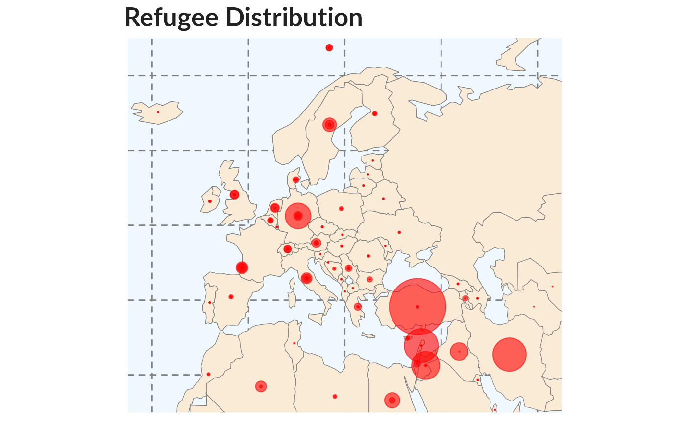

Initial Exploration
2020-09-21
Exploration.Rmdunhcr_style <- function() { font <- "Lato" ggplot2::theme( #This sets the font, size, type and colour of text for the chart's title plot.title = ggplot2::element_text(family=font, size=20, face = "bold", color = "#222222"), #This sets the font, size, type and colour of text for the chart's subtitle, as well as setting a margin between the title and the subtitle plot.subtitle = ggplot2::element_text(family=font, size=16, margin=ggplot2::margin(9,0,9,0)), plot.caption = ggplot2::element_blank(), #This sets the position and alignment of the legend, removes a title and backround for it and sets the requirements for any text within the legend. The legend may often need some more manual tweaking when it comes to its exact position based on the plot coordinates. legend.position = "top", legend.text.align = 0, legend.background = ggplot2::element_blank(), legend.title = ggplot2::element_blank(), legend.key = ggplot2::element_blank(), legend.text = ggplot2::element_text(family=font, size=13, color = "#222222"), #This sets the text font, size and colour for the axis test, as well as setting the margins and removes lines and ticks. In some cases, axis lines and axis ticks are things we would want to have in the chart axis.title = ggplot2::element_blank(), axis.text = ggplot2::element_text(family=font, size=13, color = "#222222"), axis.text.x = ggplot2::element_text(margin=ggplot2::margin(5, b = 10)), axis.ticks = ggplot2::element_blank(), axis.line = ggplot2::element_blank(), #This removes all minor gridlines and adds major y gridlines. In many cases you will want to change this to remove y gridlines and add x gridlines. panel.grid.minor = ggplot2::element_blank(), panel.grid.major.y = ggplot2::element_line(color = "#cbcbcb"), panel.grid.major.x = ggplot2::element_blank(), #This sets the panel background as blank, removing the standard grey ggplot background colour from the plot panel.background = ggplot2::element_blank(), #This sets the panel background for facet-wrapped plots to white, removing the standard grey ggplot background colour and sets the title size of the facet-wrap title to font size 22 strip.background = ggplot2::element_rect(fill = "white"), strip.text = ggplot2::element_text(size = 13, hjust = 0) ) } #Left align text left_align <- function(plot_name, pieces){ grob <- ggplot2::ggplotGrob(plot_name) n <- length(pieces) grob$layout$l[grob$layout$name %in% pieces] <- 2 return(grob) } ## a little help function to better format numbers format_si <- function(...) { function(x) { limits <- c(1e-24, 1e-21, 1e-18, 1e-15, 1e-12, 1e-9, 1e-6, 1e-3, 1e0, 1e3, 1e6, 1e9, 1e12, 1e15, 1e18, 1e21, 1e24) prefix <- c("y", "z", "a", "f", "p", "n", "", "m", " ", "k", "M", "G", "T", "P", "E", "Z", "Y") # Vector with array indices according to position in intervals i <- findInterval(abs(x), limits) # Set prefix to " " for very small values < 1e-24 i <- ifelse(i == 0, which(limits == 1e0), i) paste(format(round(x/limits[i], 1), trim = TRUE, scientific = FALSE, ...), prefix[i]) } }
# Time series time_series <- unhcrdatapackage::end_year_population_totals reference <- unhcrdatapackage::reference time_series2 <- reshape2::melt(time_series, # ID variables - all the variables to keep but not split apart on id.vars=c("Year", "CountryOriginCode","CountryAsylumCode","CountryOriginName","CountryAsylumName" ), # The source columns measure.vars=c("REF","IDP", "ASY","OOC","STA","VDA"), # Name of the destination column that will identify the original # column that the measurement came from variable.name="Population.type", value.name="Value") time_series2 <- merge(x = time_series2, by.x="CountryOriginCode", y = reference, by.y= "iso_3", all.x = TRUE) # Population, GDP & GNP per Capita from WorldBank wb_data <- wb( indicator = c("SP.POP.TOTL", "NY.GDP.MKTP.CD", "NY.GDP.PCAP.CD", "NY.GNP.PCAP.CD"), startdate = 1951, enddate = 2017, return_wide = TRUE) # Renaming variables for further matching names(wb_data)[1] <- "CountryAsylumCode" names(wb_data)[2] <- "Year" ## Getting world map for mapping world <- ne_countries(scale = "small", returnclass = "sf") centroids <- st_transform(world$geometry, '+init=epsg:3857') %>% ## Reprojected in order to get centroid st_centroid() %>% # this is the crs from d, which has no EPSG code: st_transform(., '+init=epsg:4326') %>% # since we want the centroids in long lat: st_geometry() world_points <- cbind(world, st_coordinates(centroids))
#Prepare data line_df <- time_series2 %>% filter(Population.type == "REF") %>% group_by(Year) %>% summarise(Value2 = sum(Value) ) #Make plot line <- ggplot(line_df, aes(x = Year, y = Value2)) + geom_line(colour = "#0072bc", size = 1) + # Here we mention that it will be a line chart # geom_hline(yintercept = 0, size = 1, colour = "#333333") + unhcr_style() + ## Insert UNHCR Style scale_y_continuous(label = format_si()) + ## Format axis number ## and the chart labels labs(title = "More and More refugees", subtitle = "World wide refugee population 1951-2017", caption = "UNHCR https://www.unhcr.org/refugee-statistics/") #plot(line) ggpubr::ggarrange(left_align(line, c("subtitle", "title")), ncol = 1, nrow = 1)

#Prepare data multiple_line_df <- time_series2 %>% filter(Population.type == "REF" & !(is.na(REGION_UN))) %>% group_by(Year, REGION_UN ) %>% summarise(Value2 = sum(Value) ) #Make plot multiple_line <- ggplot(multiple_line_df, aes(x = Year, y = Value2, colour = REGION_UN)) + # Adding reference to color geom_line(size = 1) + # Here we mention that it will be a line chart geom_hline(yintercept = 0, size = 1, colour = "#333333") + scale_y_continuous( label = format_si()) + ## Format axis number scale_colour_viridis_d() + ## Add color for each lines based on color-blind friendly palette unhcr_style() + ## Insert UNHCR Style ## and the chart labels labs(title = "Refugees Population are not equally spread", subtitle = "World wide refugee population 1951-2017", caption = "UNHCR https://www.unhcr.org/refugee-statistics/") #plot(multiple_line) ggpubr::ggarrange(left_align(multiple_line, c("subtitle", "title")), ncol = 1, nrow = 1)

Bar chart
Some key points to consider when designing bar chart are:
Start at the zero baseline! No exception. Do not clip the axis in order to highlight disparities at the top of the axis. Instead, try recalculating your data as percentages, or try another type of chart;
Ensure numerical axis labels are aligned to the decimal point;
Clearly denote currency or units;
When axis lines are present, it is not necessary to label each data value. However, it can be useful to highlight the final value or other important data points.
Convert your data to rounded, easily digestible values for chart labeling
Omit axes and baselines when data values are labeled, simpler, better!
When the range of your data crosses natural numerical milestones, such as from millions to billions, set the entire chart in the larger milestone. A chart should never reflect more than 1,000 millions. etc.
Ensure labels fit neatly under the bars in no more than two lines.
Horizontal bar charts help compare long lists of values or categories. It has the advantage of printing long labels without using two lines or printing vertical text, as would be required for a vertical bar.
Remember to sort your data before charting so that readers can easily compare.
Labeled values eliminate the need for grid lines, while rounding is done to make the values easy to digest.
Don’t use 3D effect!
Note that by default, R will display your data in alphabetical order, but arranging it by size instead is simple: just wrap reorder() around the x or y variable you want to rearrange, and specify which variable you want to reorder it by.
E.g. x = reorder(Country, Value2). Ascending order is the default, but you can change it to descending by wrapping desc() around the variable you’re ordering by.
Let’s see what code is required for such chart:
#Prepare data2 bar_df <- time_series2 %>% filter(Population.type == "REF" & Year == 2016) %>% group_by( CountryAsylumName, SUBREGION) %>% summarise(Value2 = sum(Value) ) %>% arrange(desc(Value2)) %>% head(10) #Make plot bars <- ggplot(bar_df, aes(x = reorder(CountryAsylumName, Value2), ## Reordering country by Value y = Value2)) + geom_bar(stat = "identity", position = "identity", fill = "#0072bc") + # here we configure that it will be bar chart geom_hline(yintercept = 0, size = 1, colour = "#333333") + coord_flip() + # Add `coord_flip()` to make your vertical bars horizontal: unhcr_style() + ## Insert UNHCR Style ## and the chart labels labs(title = "Turkey is by the far the biggest Refugee hosting country", subtitle = "Top 10 Refugee Population per country in 2017", caption = "UNHCR https://www.unhcr.org/refugee-statistics/") + scale_y_continuous( label = format_si()) + ## Format axis number theme(panel.grid.major.x = element_line(color = "#cbcbcb"), panel.grid.major.y = element_blank()) ### changing grid line that should appear #plot(bars) ggpubr::ggarrange(left_align(bars, c("subtitle", "title")), ncol = 1, nrow = 1)

Stacked bar chart
Let’s see what code is required for such chart:
#prepare data df1 <- time_series2 %>% filter(Population.type == "REF" & Year == 2016 & !(is.na(REGION_UN))) %>% group_by(Year, CountryAsylumName, CountryAsylumCode, REGION_UN ) %>% summarise(Value2 = sum(Value) ) df2 <- merge(x = df1, y = wb_data, by = c("CountryAsylumCode" ,"Year"), all.x = TRUE) df2 <- df2[ !(is.na(df2$REGION_UN)) & !(is.na(df2$NY.GNP.PCAP.CD)) , ] df2$prop <- df2$Value2 / df2$SP.POP.TOTL stacked_df1 <- df2 %>% mutate(CountryClass = cut(NY.GNP.PCAP.CD, breaks = c(0, 1005, 3955, 12235, 150000), labels = c("Low-income", "Lower-middle income", "Upper-middle income", "High-income"))) %>% group_by(REGION_UN, CountryClass) %>% summarise(Value3 = sum(as.numeric(Value2))) #create plot stacked_bars <- ggplot(data = stacked_df1, aes(x = REGION_UN, y = Value3, fill = CountryClass)) + geom_bar(stat = "identity", position = "fill") + unhcr_style() + scale_y_continuous(labels = scales::percent) + scale_fill_viridis_d(direction = -1) + geom_hline(yintercept = 0, size = 1, colour = "#333333") + labs(title = "High Share of Refugees in Africa are hosted in low-income countries", subtitle = "% of population by Country classification per Region, 2017", caption = "UNHCR https://www.unhcr.org/refugee-statistics/ - World Bank") + theme(legend.position = "top", legend.justification = "left") + guides(fill = guide_legend(reverse = TRUE)) ggpubr::ggarrange(left_align(stacked_bars, c("subtitle", "title")), ncol = 1, nrow = 1)

This example shows proportions, but you might want to make a stacked bar chart showing number values instead - this is easy to change!
The value passed to the position argument will determine if your stacked chart shows proportions or actual values.
position = "fill" will draw your stacks as proportions, and position = "identity" will draw number values.
Grouped bar chart
Making a grouped bar chart is very similar to making a bar chart.
You just need to change position = "identity" to position = "dodge", and set the fill aesthetically instead:
Let’s see what code is required for such chart:
#Prepare data grouped_bar_df <- time_series2 %>% filter(Population.type == "REF") %>% filter(Year == 2006 | Year == 2016) %>% group_by( CountryAsylumName, Year) %>% summarise(Value2 = sum(Value) ) %>% select(CountryAsylumName, Year, Value2) %>% spread(Year, Value2) %>% mutate(gap = `2016` - `2006`) %>% arrange(desc(gap)) %>% head(10) %>% gather(key = Year, value = Value2, -CountryAsylumName, -gap) #Make plot grouped_bars <- ggplot(grouped_bar_df, aes(x = CountryAsylumName, y = Value2, fill = as.factor(Year))) + coord_flip() + geom_bar(stat = "identity", position = "dodge") + geom_hline(yintercept = 0, size = 1, colour = "#333333") + unhcr_style() + scale_fill_manual(values = c("#0072bc", "#FAAB18")) + labs(title = "Biggest Increase Population", subtitle = "10 Biggest change in Refugee Population, 2006-2016", caption = "UNHCR https://www.unhcr.org/refugee-statistics/") + scale_y_continuous( label = format_si()) + ## Format axis number theme(panel.grid.major.x = element_line(color = "#cbcbcb"), panel.grid.major.y = element_blank()) ### changing grid line that should appear #plot(grouped_bars) ggpubr::ggarrange(left_align(grouped_bars, c("subtitle", "title")), ncol = 1, nrow = 1)

Dumbbell chart
Dumbbell plot (also known as Dumbbell chart, Connected dot plot) is great for displaying changes between two points in time, two conditions or differences between two groups. Another way of showing difference is a dumbbell chart:
Let’s see what code is required for such chart:
library("ggalt") library("tidyr") #Prepare data dumbbell_df <- time_series2 %>% filter(Population.type == "REF") %>% filter(Year == 2006 | Year == 2016) %>% group_by( CountryAsylumCode, Year) %>% summarise(Value2 = sum(Value) ) %>% select(CountryAsylumCode, Year, Value2) %>% spread(Year, Value2) %>% mutate(gap = `2006` - `2016`) %>% arrange(desc(gap)) %>% head(10) # Make plot dumbell <- ggplot(dumbbell_df, aes(x = `2006`, xend = `2016`, y = reorder(CountryAsylumCode, gap), group = CountryAsylumCode)) + geom_dumbbell(colour = "#dddddd", size = 3, colour_x = "#0072bc", colour_xend = "#FAAB18") + unhcr_style() + labs(title = "Where did Refugee Population decreased in the past 10 years?", subtitle = "Biggest decrease in Refugee Population, 2006-2016", caption = "UNHCR https://www.unhcr.org/refugee-statistics/") + scale_x_continuous( label = format_si()) + ## Format axis number theme(panel.grid.major.x = element_line(color = "#cbcbcb"), panel.grid.major.y = element_blank()) ### changing grid line that should appear #plot(grouped_bars) ggpubr::ggarrange(left_align(dumbell, c("subtitle", "title")), ncol = 1, nrow = 1)

Histogram
Histogram are used to plot the frequency of score occurrences in a continuous variable (numeric, integer) that has been divided into classes, called bins.
A histogram is not a bar chart: histograms are used to show distributions (or the shape) of variables while bar charts are used to compare variables.
Some data sets have a distinct shape. Data hardly ever fall into perfect patterns, so you have to decide whether the data shape. The two interpretation key are the following:
Symmetric bell shape: if you cut it down the middle and the left-hand and right-hand sides resemble mirror images of each other. The middle of the chart is the place when the largest occurrence appears: in this case, we have something closed to a normal distribution. Kurtosis is a measure of whether the data are heavy-tailed or light-tailed relative to a normal distribution. That is, data sets with high kurtosis tend to have heavy tails, or outliers. Data sets with low kurtosis tend to have light tails, or lack of outliers.
Skewed right or left:looks like a lopsided mound, with a tail going off to the right or left. Skewness is a measure of symmetry, or more precisely, the lack of symmetry. A distribution, or data set, is symmetric if it looks the same to the left and right of the center point.
A uniform distribution would be the extreme case.
Let’s see what code is required for such chart:
# Prepare Data hist_df <- df2 %>% mutate(ref.per.local = (Value2 / SP.POP.TOTL) * 100) %>% arrange(desc(Value2)) %>% head(50) # Chart histo <- ggplot(hist_df, aes(ref.per.local)) + geom_histogram( colour = "white", fill = "#0072bc") + geom_hline(yintercept = 0, size = 1, colour = "#333333") + unhcr_style() + scale_x_continuous(limits = c(0, 20)) + labs(ylab = "Count of countries", title = "Only 2 countries have more than 5 refugees per 100 locals", subtitle = "Distribution of refugee to local ratio for top 50 refugee hosting countries in 2016", caption = "UNHCR https://www.unhcr.org/refugee-statistics/ - World Bank") ggpubr::ggarrange(left_align(histo, c("subtitle", "title")), ncol = 1, nrow = 1)

Scatterplot
Scatter plot are used to check for correlation. A trend line can be added to compare two set of measures to determine if as one set goes up, the other set correspondingly goes up or down and how strongly.
Scatter plot are also a good way to identify clusters of observation.
Let’s see what code is required for such chart:
## Chart scatter <- ggplot(df2, aes(y = Value2, x = NY.GDP.MKTP.CD)) + geom_point(aes(col = REGION_UN)) + #geom_smooth(method = "loess", se = F) + unhcr_style() + scale_x_continuous( label = format_si(), ) + ## Format axis number scale_y_continuous( label = format_si(), limits = c(0, 1000000)) + ## Format axis number scale_color_viridis_d(direction = -1) + labs(title = "Refugee hosting is not correlated with Economic Wealth", subtitle = "Refugee population Vs GDP", y = "Refugee", x = "Gross domestic product (GDP)", caption = "2016 Figures, UNHCR https://www.unhcr.org/refugee-statistics/, World bank") + theme(axis.title = element_text(size = 12)) ggpubr::ggarrange(left_align(scatter, c("subtitle", "title")), ncol = 1, nrow = 1)

Maps
A map is a graphic representation or scale model of spatial concepts. It is a means for conveying geographic information. Maps are a universal medium for communication, easily understood and appreciated by most people, regardless of language or culture. Maps are not realistic representations of the actual world. All maps are estimations, generalizations, and interpretations of true geographic conditions.
One key rule when creating a map is:
- Absolute value: Proportional symbol
- Relative value (ratio): Choropleth
Let’s see what code is required for such chart:
# Merge data with geographic coordinates world <- merge(x = world , y = df2, by.y = "CountryAsylumCode" , by.x = "iso_a3") df3 <- merge(x = df2 , y = world_points, by.x = "CountryAsylumCode" , by.y = "iso_a3") # plot map <- ggplot(data = world) + geom_sf(fill = "antiquewhite", colour = "#7f7f7f", size = 0.2) + coord_sf(xlim = c(-25, 65), ylim = c(25, 75), expand = FALSE) + ## Clipping on Mediterranean Sea geom_point(data = df3, aes(x = X, y = Y , size = Value2 ), alpha = 0.6, colour = "red") + scale_size_area( max_size = 20) + xlab("") + ylab("") + ggtitle("Refugee Distribution") + unhcr_style() + theme(panel.grid.major = element_line(color = gray(.5), linetype = "dashed", size = 0.5), panel.background = element_rect(fill = "aliceblue"), axis.text.x = element_blank(), axis.text.y = element_blank(), legend.position = "none" ) ggpubr::ggarrange(left_align(map, c("title")), ncol = 1, nrow = 1)
